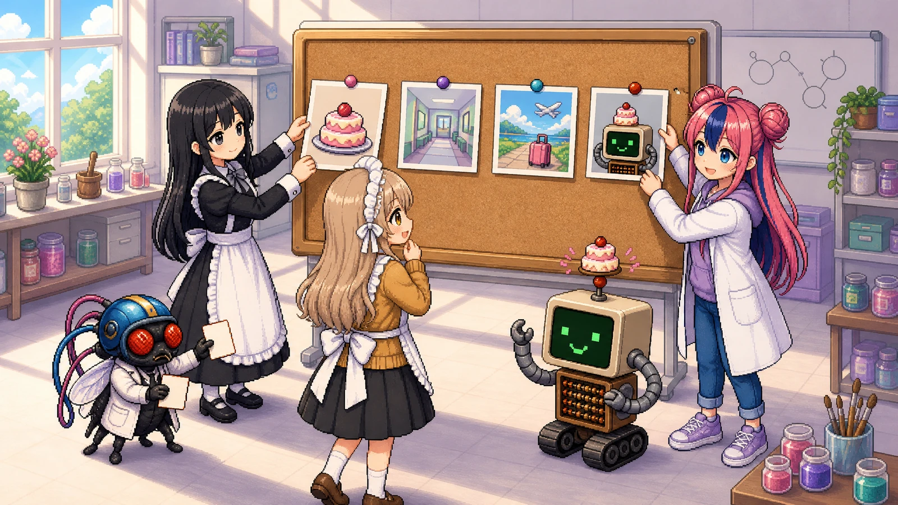
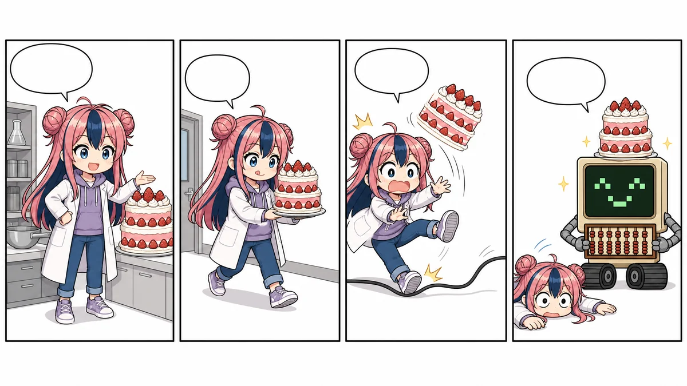
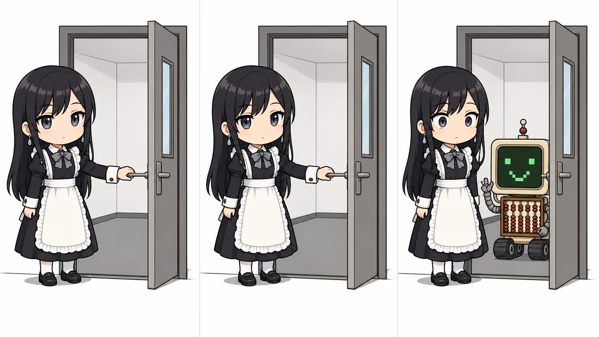
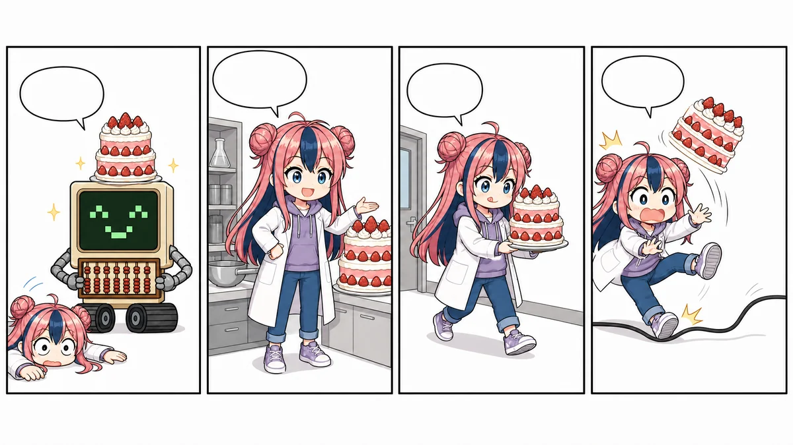
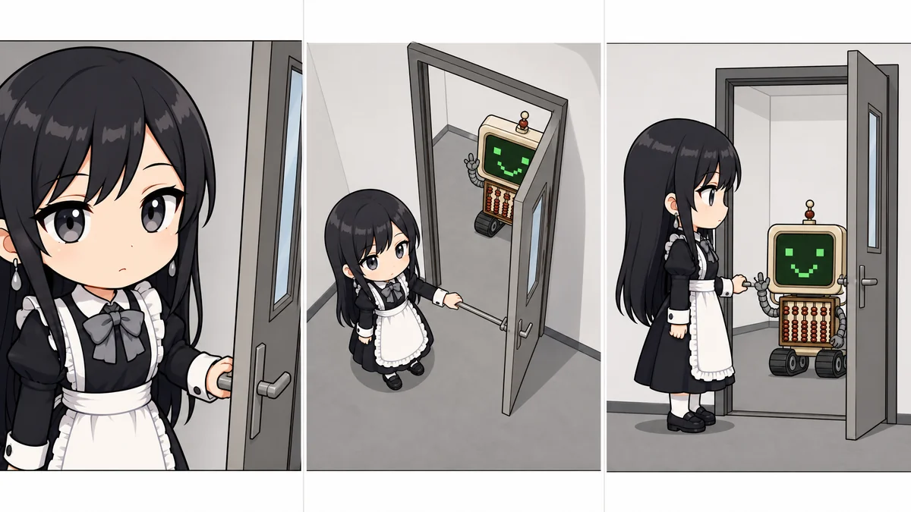
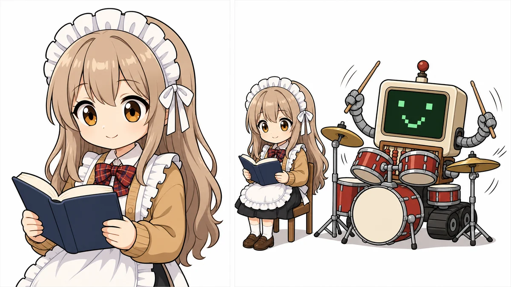

오늘의 과제

박사오늘은 4컷 만화다. 하루가 케이크를 만들어 온 이야기야.

주판봇케이크가 주판봇 머리 위에 있는 장면이 제일 웃기니 첫 컷에!

초파리 연구원첫 컷에 보여 주면 나머지 세 컷이 할 일이 없어. 기대를 쌓고 마지막에 뒤집자.

하루그 케이크… 진짜 제가 만든 거예요.

모델은 하루·시아·모아 셋입니다. 주판봇은 "제일 웃긴 장면을 첫 컷에!"라고 합니다. 초파리는 "제일 웃긴 장면은 마지막까지 숨겨"라고 합니다. 같은 네 장면을 어떤 순서로 놓아야 웃길까요?
그림 실력·코드·수식을 몰라도 됩니다. 실험을 눌러 보며 따라오세요.
기(평소) → 승(기대가 커짐) → 전(뒤집기) → 결(반응). 뒤집는 장면이 앞에 오면 웃음이 미리 샙니다
선물 포장, 깜짝 공개, 추리 소설 모두 "마지막에 보여 주기"로 즐거움을 만듭니다.
웹툰·인스타툰 작가는 대본을 쓸 때 마지막 컷 대사를 먼저 정하고 거꾸로 앞 컷을 채우곤 합니다. 끝을 알아야 기대를 어디까지 쌓을지 정해집니다.


A(만들기) → B(들고 가기) → C(넘어지기) → D(머리에 착지) 순서에서 기대가 쌓이고 3·4컷에서 뒤집힙니다.
결과 장면 D가 1컷에 오면 "왜 저렇게 됐나"를 설명하는 이야기가 되어, 웃음보다 궁금증이 남습니다.
작업에서는 컷마다 "이 컷에서 독자가 기대하는 것" 한 줄을 적어 봅니다. 3컷째에서 그 기대가 깨지면 순서가 맞습니다.

AI에게 4컷 만화를 한 장으로 요청했더니 네 컷이 모두 "케이크가 머리에 얹힌" 비슷한 장면으로 나왔습니다. 써도 될까요?
컷마다 다른 일이 일어나야 순서가 생깁니다. "Panel 1: … Panel 2: … Panel 3: … Panel 4: …"처럼 컷별로 한 문장씩 적고, 각 컷의 표정도 따로 적습니다. 그래도 섞이면 컷을 한 장씩 만들어 이어 붙입니다.
한 번은 우연, 두 번은 패턴입니다. 패턴이 생긴 다음 세 번째에 깨야 어긋남이 보입니다
"하나, 둘, 셋" 하고 셋에 맞춰 뛰자 했는데 둘에서 뛰는 친구, 두 번 연속 같은 메뉴를 시키다 세 번째에 이상한 걸 시키는 친구 모두 셋의 법칙입니다.
개그 애니메이션에서는 같은 동작을 같은 구도로 두 번 보여 준 뒤, 세 번째에 구도는 같고 결과만 바꿉니다. 같은 구도가 비교를 쉽게 해 줍니다.


반복 2번 + 어긋남 1번(모두 세 번)에서 패턴과 어긋남이 함께 또렷합니다.
반복 1번이면 패턴이 아직 없고, 반복 4~5번이면 어긋남이 오기 전에 지루함이 먼저 옵니다.
작업에서는 반복하는 장면의 구도·표정·대사를 거의 똑같이 그립니다. 비슷할수록 세 번째의 다른 점이 잘 보입니다.

AI에게 "같은 장면 세 번, 마지막만 다르게"를 요청했더니 세 장면의 구도가 모두 달랐습니다. 괜찮을까요?
구도가 다르면 반복이 반복으로 보이지 않아 어긋남이 약합니다. "all three panels use exactly the same camera angle and framing; only the third panel changes: …"처럼 같아야 할 것을 먼저 적습니다.
처음엔 가까이 잘라 보여 주고, 마지막 컷에서 화면을 넓히면 숨긴 정보가 반전이 됩니다

학교 수학으로 보면 — 닮음과 넓이의 비 — 닮은 도형에서 길이의 비가 a : b이면 넓이의 비는 a² : b²입니다.
| 식 조각 | 뜻 |
|---|---|
| 프레임 폭 | 지금 컷에서 보여 주는 화면의 폭 |
| 전체 폭 | 장면 전체의 폭 |
| 보이는 넓이 비율 | 전체 장면 중 지금 보이는 몫 |

휴대폰 사진을 확대해 일부만 보여 주고 "이게 뭘까요?" 하는 놀이와 같습니다. 마지막에 원래 크기로 돌리면 정답이 나옵니다.
개그 영상에서 카메라가 인물 얼굴에서 천천히 뒤로 빠지며 엉뚱한 배경을 드러내는 장면을 "줌 아웃 반전"이라고 부릅니다. 마지막 컷만 화면을 넓게 쓰는 4컷도 많습니다.
프레임 폭 40%면 장면의 16%만 보여 조용한 독서로 보이고, 100%로 넓히면 옆에서 북을 치는 주판봇이 드러납니다.
폭을 70%까지만 넓혀도 넓이는 49%라 숨긴 것이 일부 새어 나옵니다. 반전을 지키려면 마지막 컷 전까지 좁게 둡니다.
작업에서는 "숨길 정보"를 먼저 정하고, 앞 컷들의 프레임이 그 정보를 피해 가는지 확인합니다.
AI에게 "close-up of Moa reading"을 요청했더니 배경 구석에 주판봇의 북이 살짝 보입니다. 괜찮을까요?
반전이 미리 샙니다. 앞 컷은 "plain quiet background, nothing else visible"처럼 배경을 비워 달라고 적거나, 부분 수정으로 그 구석만 칠해 지웁니다.
가로 읽기 만화는 왼쪽 위 → 오른쪽 아래로 읽습니다. 받아치는 말(펀치라인)이 먼저 읽히면 박자가 깨집니다
단체 대화방은 위에서 아래로 시간 순서입니다. 순서가 뒤집히면 대답이 질문보다 먼저 보입니다.
웹툰은 세로로 길게 내려 읽으므로 위의 말풍선이 먼저 읽힙니다. 펀치라인 앞에 빈 공간을 길게 두어 스크롤하는 동안 정지(홀드) 효과를 내기도 합니다.
가로 읽기에서는 셋업을 왼쪽 위, 펀치라인을 오른쪽 아래에 둘 때 대화가 차례대로 읽힙니다.
읽는 방향을 오른쪽부터로 바꾸면 자리도 거울처럼 뒤집어야 합니다. 같은 그림을 다른 나라 독자에게 보일 때 주의할 점입니다.
작업에서는 말풍선을 넣은 뒤 손가락으로 읽는 순서를 따라가 봅니다. 손가락이 되돌아가면 자리를 바꿉니다.
AI가 그린 만화에 말풍선 안 글자가 깨져 있습니다. 어떻게 할까요?
그림 생성 AI는 아직 글자를 정확히 쓰지 못하는 경우가 많습니다. "empty speech bubbles, no text"로 빈 말풍선만 받고, 글자는 그림 편집 앱에서 직접 넣습니다.
이 부에서 배운 원리를 그림 생성 AI(Genspark 등)로 직접 확인합니다. A는 이 페이지 그림을 실제로 만든 프롬프트, B는 원리를 하나 빼거나 바꾼 비교용 문장입니다.
참고 그림 내려받기: haru_anime_base · sia_anime_base · moa_anime_base · haru_sheet · sia_sheet · moa_sheet · doctor_sheet · fruitfly_sprites_6 · jupanbot_ref_genspark_v0 · pixel_style_ref_prev_cover
만들기 → 들고 가기 → 넘어지기 → 머리에 착지 순서의 4컷을 받습니다.
첨부: refs/haru_anime_base.png, refs/haru_sheet.png, refs/jupanbot_ref_genspark_v0.png
Illustration, wide 16:9, a four-panel comic strip arranged left to right, panels separated by white gutters. Art style: cute super-deformed comedy anime style, about 2.5 heads tall, clean bold lineart, flat cel colors with one soft shadow tone. Match the attached reference images exactly (face, hair, colors, accessories), simplified into the SD style. All characters are adults in their twenties (the Professor is an adult man in his thirties) drawn in a comedy SD style: adult personalities and adult outfits, not children; modest outfits exactly as described. Panel 1: Haru (adult lab assistant, long straight pink hair with navy streaks and a thick navy streak down the center of the bangs, two round hair buns on top, small ahoge, big blue eyes), wearing lavender hoodie with white drawstrings over a white t-shirt, open white knee-length lab coat proudly finishes a tall strawberry cake in the lab kitchen. Panel 2: she carries the cake very carefully down the hallway, tongue out in concentration. Panel 3: she trips over a cable, the cake flying into the air, her face shocked. Panel 4: the cake has landed perfectly upright on top of the head of AbaBot (boxy beige retro CRT-monitor robot, dark green screen face with mint pixel eyes, short antenna topped with a red-brown abacus bead, gray segmented arms, small tank treads), who has sparkling proud eyes, while Haru lies on the floor staring. Empty speech bubbles are allowed but with no text inside. Plain white background. No text, no letters, no numbers, no speech-bubble text, no logos, no watermark, no revealing clothing, not childlike, no school uniform, not resembling any famous anime character or real person.
Same comic, keep the same style. Change only: reorder the panels so the cake on the robot's head comes first, followed by finishing the cake, carrying it, and tripping. Still no text.

실제 결과: A는 순서·표정·빈 말풍선까지 요청대로 나왔고, 3컷째 케이크가 날아가는 반전 뒤 4컷째 착지가 깔끔합니다. B는 결과가 첫 컷에 와서 나머지 세 컷이 "어쩌다 저렇게 됐나"를 설명하는 이야기가 되었습니다.
같은 구도로 두 번 반복하고 세 번째에 어긋내는 세 장면을 받습니다.
첨부: refs/sia_anime_base.png, refs/sia_sheet.png, refs/jupanbot_ref_genspark_v0.png
Illustration, wide 16:9, three panels side by side separated by white gutters. Art style: cute super-deformed comedy anime style, about 2.5 heads tall, clean bold lineart, flat cel colors with one soft shadow tone. Match the attached reference images exactly (face, hair, colors, accessories), simplified into the SD style. All characters are adults in their twenties (the Professor is an adult man in his thirties) drawn in a comedy SD style: adult personalities and adult outfits, not children; modest outfits exactly as described. All three panels use exactly the same camera angle and framing of a lab door seen from the hallway. Panel 1: Sia (adult maid intern, long straight jet-black hair, no headdress, gray eyes, small silver earrings), wearing charcoal-black long-sleeved maid dress, large gray bow at the collar, long white frilled apron opens the door, the room behind is empty, neutral face. Panel 2: identical — she opens the door again, empty room, neutral face. Panel 3: identical framing, she opens the door and AbaBot (boxy beige retro CRT-monitor robot, dark green screen face with mint pixel eyes, short antenna topped with a red-brown abacus bead, gray segmented arms, small tank treads) is standing right in the doorway waving cheerfully, Sia frozen with a blank face. Plain white background. No text, no letters, no numbers, no speech-bubble text, no logos, no watermark, no revealing clothing, not childlike, no school uniform, not resembling any famous anime character or real person.
Same comic. Change only: each of the three panels uses a very different camera angle (close-up, wide shot from above, side view). Still no text.

실제 결과: A는 세 장면의 구도가 똑같아 세 번째 장면의 주판봇이 바로 눈에 띕니다. 시아는 셋 다 같은 담담한 얼굴이라 데드팬도 함께 살았습니다. B는 장면마다 구도가 달라 반복이 반복으로 느껴지지 않고, 주판봇이 둘째 장면부터 보여 어긋남이 미리 샙니다.
이 부의 원리를 내 손으로 프롬프트에 옮겨 보는 과제입니다. 목표 → 순서 → 넣을 프롬프트 → 확인할 것 → 예상 결과 → 자주 생기는 문제 순서로 적었습니다. 결과는 매번 조금씩 다르니, 그림이 똑같지 않아도 '확인할 것'이 맞으면 성공입니다.
목표첫 장면은 가까이 잘라 정보를 숨기고, 두 번째 장면에서 넓혀 반전을 보여 주는 2컷을 만듭니다.
왜 이 연습인가AI는 장면을 친절하게 다 보여 주려는 경향이 있어 첫 컷 구석에 반전이 새기 쉽습니다. 첫 컷의 배경을 비워 달라고 적어야 합니다.
첨부할 참고 그림: refs/moa_anime_base.png, refs/moa_sheet.png, refs/jupanbot_ref_genspark_v0.png — 참고 그림은 위 직접 만들어 보기에서 내려받을 수 있습니다.
Illustration, wide 16:9, two panels side by side separated by a white gutter. Art style: cute super-deformed comedy anime style, about 2.5 heads tall, clean bold lineart, flat cel colors with one soft shadow tone. Match the attached reference images exactly (face, hair, colors, accessories), simplified into the SD style. All characters are adults in their twenties (the Professor is an adult man in his thirties) drawn in a comedy SD style: adult personalities and adult outfits, not children; modest outfits exactly as described. Panel 1: tight close-up of Moa (adult maid intern, long ash-beige wavy hair, white frilled maid headband with a white ribbon over her LEFT ear, amber eyes), wearing camel knit cardigan over a white blouse, red and navy plaid bow tie, white frilled apron peacefully reading a book with a calm smile; plain quiet background, nothing else visible. Panel 2: same moment, zoomed far out: right next to Moa, AbaBot (boxy beige retro CRT-monitor robot, dark green screen face with mint pixel eyes, short antenna topped with a red-brown abacus bead, gray segmented arms, small tank treads) is wildly playing a big drum set with motion lines, while Moa keeps reading calmly. Plain white background. No text, no letters, no numbers, no speech-bubble text, no logos, no watermark, no revealing clothing, not childlike, no school uniform, not resembling any famous anime character or real person.

예상 결과첫 장면은 모아의 얼굴과 책만 보이는 평화로운 클로즈업, 두 번째 장면은 넓게 빠져 북을 치는 주판봇이 드러납니다.
| 문제 | 대처 |
|---|---|
| 첫 장면에 북이 살짝 보인다 | "nothing else visible in panel 1"을 더하거나 부분 수정 |
| 두 장면의 모아 옷이 다르다 | 설명 문장을 두 장면 모두에 그대로 반복 |
실제 결과: 첫 장면에 반전 정보가 전혀 없고, 둘째 장면에서 모아가 여전히 태연해 성공입니다.
더 해 보기세 번째 장면을 더해, 주판봇 뒤에서 박사가 귀를 막고 있는 것까지 한 번 더 넓혀 보세요(반전 두 번).

| 항목 | 주판봇 | 초파리 |
|---|---|---|
| 알아봄(무슨 이야기인지) | 6 | 9 |
| 원리(순서·반복·숨기기) | 2 | 9 |
| 웃음 | 4 | 9 |
| 합계 | 12 | 27 |


점수는 이야기 속 예시입니다. 실제 그림을 평가한 값이 아닙니다.
| 주제 | 한 줄 | 작업에서는 |
|---|---|---|
| 1단계 기승전결 | 반전은 3컷째, 마무리는 4컷째 | 마지막 컷 대사부터 정한다 |
| 2단계 셋의 법칙 | 두 번 반복 → 세 번째 어긋남 | 반복 장면은 같은 구도로 |
| 3단계 프레이밍 | 보이는 넓이 = (폭 비율)² | 숨길 정보를 먼저 정한다 |
| 4단계 말풍선 | 셋업 왼쪽 위, 펀치라인 오른쪽 아래(가로 읽기) | 손가락으로 읽는 순서 따라가기 |

이 페이지에 나온 개념·방법·비유·쓰임을 모았습니다. 검색하고, "설명 보러 가기"로 본문에 돌아갑니다.
지식 색인을 출처와 함께 파일로 내려받습니다. 서지 관리는 BibTeX·RIS, 온톨로지 편집은 Turtle, 그래프 도구는 CSV, 여러 페이지 합치기는 kg.json입니다.